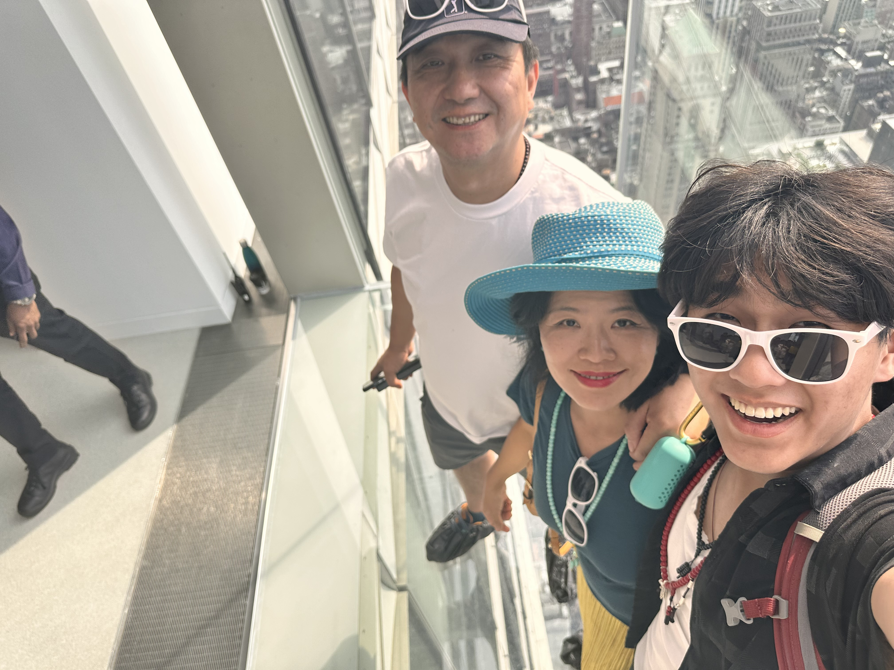
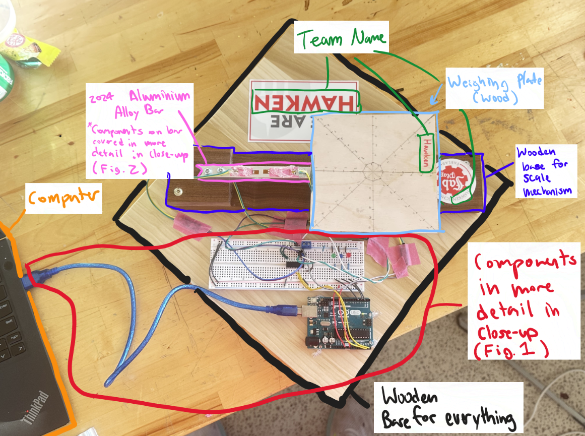
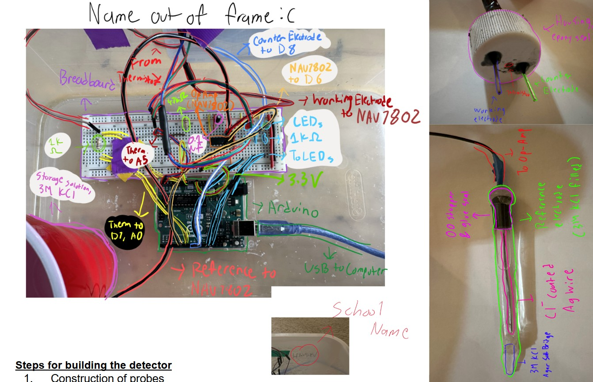

<div class="textcontainer">
<h3>About Me</h3>
<p class="margin"> </p>
<div class="center-row">

<p id="aboutme">
Hey there! I'm Teddy Zheng a Freshman ('29) living in Apley Court (it's as nice as the rumors say).
It's only the first couple days of school, but as of now I am considering concentrating in CS and possibly double concentrating in either Film or Physics.
I am from Cleveland, Ohio and I went to a small school called Hawken School.
Naturally I am a huge Cleveland sports fan, so if you ever want to talk about the Cavs, and Browns or Guardians (kindly... please) I am your guy.
I also have a bit of experience making things we may explore in this class from either SciOly or personal interest (see below)
</p>
</div>
<br></br>
I see that you've looked down here, so it means you are (potentially) interested in what I've made!
... so here are some of the things I've made in the past:
</br></br>
<h3>Science Olympiad</h3>
</br></br>
In SciOly I've made a lot of things, some of which are a tad janky (they still worked though!)
<ul>
<li> A self machined (with a drill press...) somehow accurate (within 3 grams) scale:</li>
</br>

</br>
<a href="https://docs.google.com/presentation/d/16mhua1K6A8iauszmTLvPc6xWdid1iHLniEO_ZMEg2aU/edit?usp=sharing">Mass Detector Build Log</a>
</br>
<li> An even more janky ORP probe that evolved from a random number generator to a functional probe:</li>
</br>

</br>
<a href="https://docs.google.com/presentation/d/1uB5G3F83OMyU_LF6ZNk1uSprN7iaDiA9cbcOTSvu_oY/edit?usp=sharing">ORP Probe Build Log</a>
</br>
<li> A scary robot that is very much a fire hazard but still manages to chase you like a wasp on a hot day: </li>
<img src="./armfinpic.jpg" alt="self made robot" style="width:900px;height:600px;">
</br>
<a href="https://youtu.be/gD_2Bhjj0Hw?si=QtqURMyjxS_rf8Ou">Sorry no build log</a>
</ul>
<br></br>
<h3>Personal Projects</h3>
I've also recently done a project with a friend. Last winter we decided to spend 3 weeks to build a robotic arm.
Unfortunately, we did not know CAD whatsoever. So we had to learn it from scratch, work tools we had never touched before,
and coordinate material and electronic aquisition all while being in class.
<br></br>
<img src="./armfinpic.jpg" alt="robot arm" style="width:300px;height:auto;">
<br></br>
<a href="https://hydraulicarmhawkproj.blogspot.com/">Hydraulic Arm Build Log (many many blogs)! Please Read!</a>
<br></br>
<iframe width="640" height="auto" src="https://youtu.be/CXEeo4BV0vE"></iframe>
<br></br>
<iframe width="640" height="auto" src="https://youtu.be/5KFrYwsFCxI"></iframe>
<br></br>
<iframe width="640" height="auto" src="https://youtu.be/3ib-rhEJfGA"></iframe>
<br></br>
Please feel free to reach out to me at: <a href=teddyzheng@college.harvard>teddyzheng@college.harvard</a>
</div>